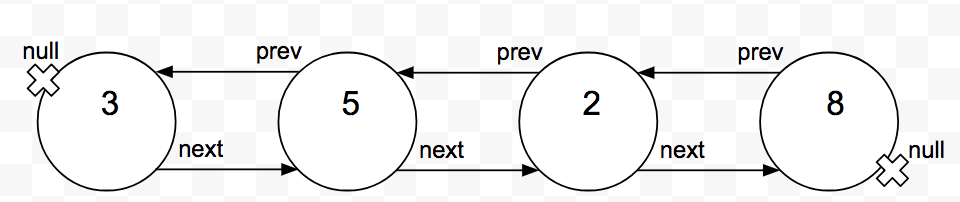
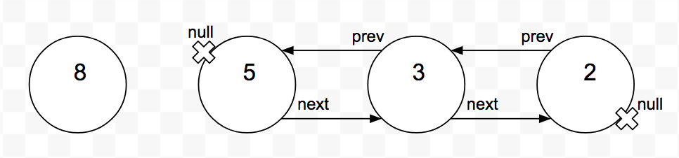
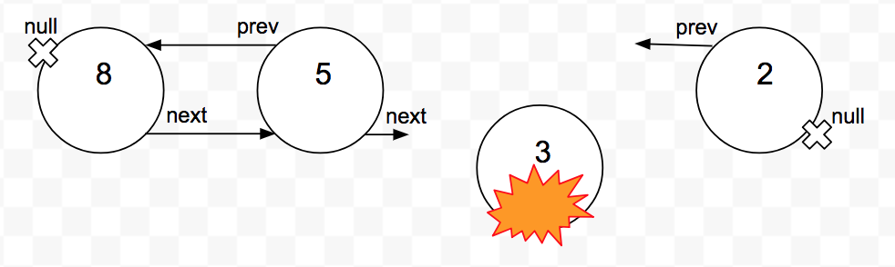
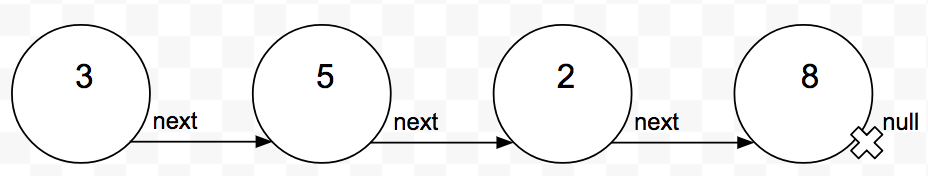

\[3n^2 - 100n + 6\]
True or false?
\[3n^2 - 100n + 6 = O(n^2)\]
True or false?
\[3n^2 - 100n + 6 = O(n^3)\]
True or false?
\[3n^2 - 100n + 6 = O(n)\]
True or false?
\[3n^2 - 100n + 6 = \Omega(n^2)\]
True or false?
\[3n^2 - 100n + 6 = \Omega(n^3)\]
True or false?
\[3n^2 - 100n + 6 = \Omega(n)\]
Given \[3n^2 - 100n + 6 = O(n^2)\] \[3n^2 - 100n + 6 = \Omega(n^2)\]
True or false?
\[3n^2 - 100n + 6 = \theta(n^2)\]
Given \[3n^2 - 100n + 6 = O(n^3)\] \[3n^2 - 100n + 6 \ne \Omega(n^3)\]
True or false?
\[3n^2 - 100n + 6 = \theta(n^3)\]
Given \[3n^2 - 100n + 6 \ne O(n)\] \[3n^2 - 100n + 6 = \Omega(n)\]
True or false?
\[3n^2 - 100n + 6 = \theta(n)\]
For each of the following pairs of functions \(f(n)\) and \(g(n)\)
state whether
"Mankind’s progress is measured by the number of things we can do without thinking."
– Alfred North Whitehead
Here is the API for a Stack:
push(s, x) - insert \(x\) at the top of stack \(s\)pop(s) - return and remove the top of stack \(s\)How these are implemented on the stack will have an effect on performance depending on the circumstance.
There are two classes of data structures when it comes to storage and organization.
An array is a fixed sized structure of data records, stored so that each element can be accessed efficiently by its index or address.
Good stuff:
\[C = \sum_{i=1}^{\log n} i \times {n \over 2^i} \le n \sum_{i=1}^\infty {i \over 2^i} = 2n\]
On average, each element moves only twice.
The total work for managing this is O(n), the same as an array.
Lists are one of the fundamental linked data structures. Linked structures use pointers to connect their elements.




Stack: LIFO (last-in, first-out)
push(s, x) - add item x to stack spop(s) - return and delete the top item in stack sQueue: FIFO (first-in, first-out)
enqueue(q, x) - add item x to queue qdequeue(q) - return and delete front item from queue qGroup Discussion: What were the strategies you found successful when implementing stacks and queues at the end of CS1?
Stack: easily implemented with an array, push and pop increment and decrement a pointer.
Queue: easily implemented as a doubly linked list with enqueue and dequeue operating on opposite ends of the list.
search(s, k) - Given a set s and key k, return a pointer to an
element in s or nil if no such elementinsert(s, x) - modify s to contain xdelete(s, x) - remove x from s.min(s), max(s) - returns the element of s which has the
smallest/largest key.predecessor(s,x), successor(s,x) - Given some element x whose key
is from an ordered set s, return the next/previous element or
nil if no such element. (Logical successor, not storage order)Group practice:
What's the asymptotic worst-case run time for each of a dictionary's operations if we implement them with:
| Operation | Unsorted Array | Sorted Array |
|---|---|---|
| search | sequential search - O(n) | binary search - O(lg n) |
| insert | first empty spot - O(1) | search, make room - O(n) |
| delete | delete, decrement - O(1) | delete, make room - O(n) |
| min/max | sequential search - O(n) | first or last - O(1) |
| pred/succ | sequential search - O(n) | increment pointer - O(1) |
Group practice:
What's the asymptotic worst-case run time for each of a dictionary's operations if we implement them with:
| Operation | SU | DU | SS | DS |
|---|---|---|---|---|
| search | O(n) | O(n) | O(n) | O(n) |
| insert | O(1) | O(1) | O(n) | O(n) |
| delete | O(n)* | O(1) | O(n)* | O(1) |
| successor | O(n) | O(n) | O(1) | O(1) |
| predecessor | O(n) | O(n) | O(n)* | O(1) |
| min | O(n) | O(n) | O(1) | O(1) |
| max | O(n) | O(n) | O(1)* | O(1) |